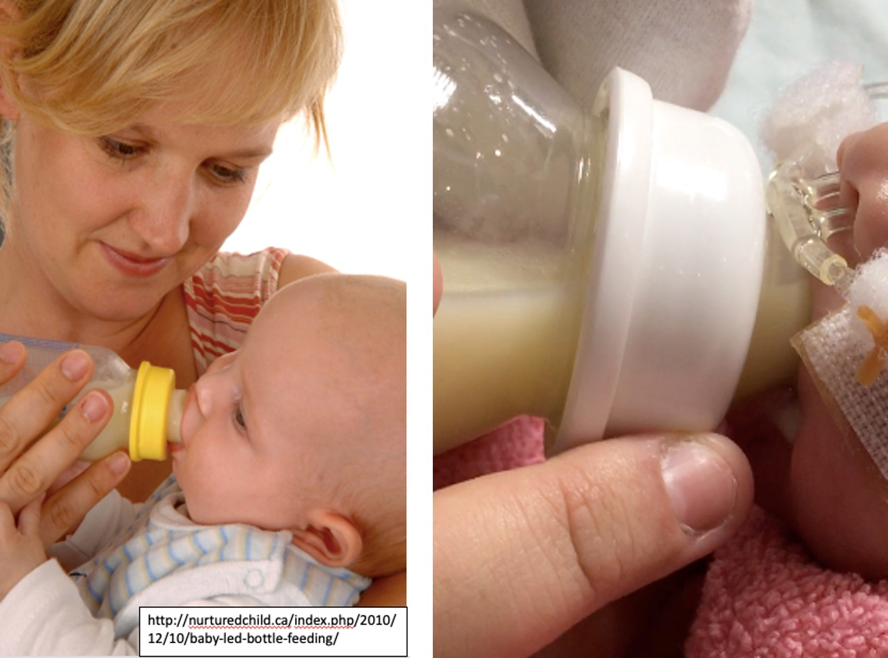

在一天辛苦的工作後，我們總希望有時間好好的坐下來吃飯，如果還是在燈光美氣氛佳的餐廳，和最親愛的家人一起邊吃邊聊天，絕對是生活中的一大享受！相反的，如果每次到了滿懷期待的用餐時間，卻如同大胃王比賽一般的被規定要在10分鐘吃掉2個便當，久了之後我想無論是誰，只要想到又要吃飯應該都會頭大。在教養上，我們常聽到要尊重孩子的個別氣質、尊重孩子的選擇；事實上，餵食時我們也可以選擇尊重寶寶的節奏與需求。
嬰兒主導式瓶餵意指讓寶寶在沒有壓力的情形下，根據自己的需求決定是否進食、用自己的節奏完成進食以及自己決定什麼時候完成進食。只要是瓶餵，無論是擠出母奶或是配方奶都適用。和大人一樣，我們也可以把嬰兒的進食分成「前菜」、「主餐」以及最後的「甜點」三階段。
前菜：親子互動與飢餓暗示
有些照顧者習慣聽到寶寶開始大哭時才準備餵食，然而，哭泣往往是飢餓訊息的最後底線！（翻成白話文就是，快來餵我！我快餓死了！）到了這個時候才餵寶寶，通常還得花費一番功夫讓寶寶平靜下來。如果我們在寶寶剛開始出現飢餓暗示的時候，就試著先把寶寶的包巾打開，幫寶寶做做按摩，或者讓寶寶的手腳有機會揮一揮、踢一踢，讓寶寶慢慢從睡眠中甦醒過來，可以幫助寶寶在相對較平靜的狀態下開始進行餵食。而這樣的親子互動與刺激，也對寶寶的神經行為發展有正向的影響。
主餐：嬰兒主導式瓶餵
-
第一步: 開始餵食時，我們希望將寶寶擺在半坐臥或直立姿勢（仍然要保持頭、頸與身體一直線的原則），將寶寶雙手露出，讓寶寶有機會參與餵食，也可以藉此觀察寶寶在進食過程中是否出現壓力反應。
-
第二步: 奶瓶接近寶寶時，先以奶嘴頭輕觸寶寶人中的位置，誘發寶寶的尋乳反射，最好是看到寶寶出現嘴巴張大、舌頭伸出來想「勾」奶嘴的時候，再將奶嘴平放到寶寶的舌頭上。若寶寶嘴巴張得不夠大，可以在寶寶將奶嘴頭含住之後，稍微把奶瓶向內推，讓寶寶的雙唇可以外翻且包覆奶嘴根部。
-
第三步: 保持奶瓶和寶寶的舌頭平行（也就是盡量平行地面），此時奶嘴頭只有前端（寶寶含進口中的位置）充滿奶水，從外部看奶水液面也是平行地面的狀態。如此一來，寶寶可以自己控制奶水的流量，而不是受迫於奶瓶直立所產生的液面壓力，讓寶寶必須一直快速吞嚥來避免窒息。不用擔心寶寶會吃進過多空氣，消化道的兩端都是開口，寶寶是可以自行將氣體排出的。快速地吞嚥反而容易讓寶寶將奶水混合空氣一起吞下，產生腹脹等不適。在餵食過程中，也不要忘記和寶寶有眼神交流或是說說話，此時是非常好的親子互動時機喔！
-
第四步: 若中途寶寶需要休息，可稍稍將奶瓶放低（奶嘴頭輕頂上顎），讓寶寶有足夠的時間休息，又不會因為奶瓶被抽走而感到挫折。若停留時間太久，可以輕輕轉動奶瓶提醒寶寶，千萬不要用奶瓶在寶寶嘴裡攪動來強迫吸吮。
-
第五步: 觀察寶寶的表現，若出現頭轉開、嘴巴自然鬆開或是試圖退開奶瓶等動作，代表寶寶該餐已經滿足，應尊重寶寶停止餵食。

有些早產寶寶由於低張力或心肺耐力不足等情形，在餵食時需要額外協助，使用單純的嬰兒主導式瓶餵技巧可能會有餵食困難的問題，建議尋求物理治療師的協助，根據寶寶的狀況和治療師充分討論後，找到最適合家庭與寶寶的餵食方式！
甜點：拍拍抱抱
有些寶寶在餵食結束放回床上後，會出現哭泣的表現，若寶寶進食狀況良好，此時的哭泣可能只是寶寶在跟大人討安撫！若時間許可，不妨讓寶寶再多留在身上一陣子，享受專屬於您和寶寶的親密時光。
嬰兒主導式瓶餵可以避免過度餵食，也可以減少腹脹引起的嘔吐或焦躁感；對於希望在瓶餵補充下練習親餵的家長來說，嬰兒主導式的瓶餵方法可以讓寶寶適應回到乳房上的進食感受。而從動作發展的觀點來看，嬰兒主導式的瓶餵技巧可以讓寶寶在原始反射的帶動下練習口腔的自主動作控制，包括口腔周邊肌肉、舌頭以及咽喉部的肌群等，奠定良好的口腔動作習慣，有助於未來顳顎關節功能、齒列生長以及語言發展。進食是一件讓人感到愉悅的事情，千萬不要讓進食的享受淪為時間的競賽！

Share this post
Twitter
Facebook
Email